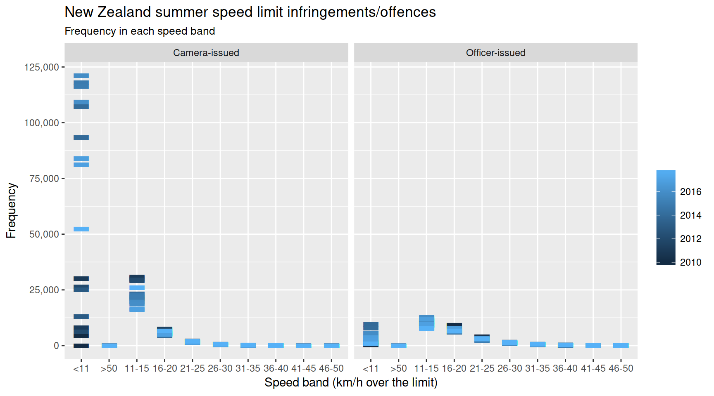

The nzpullover package makes available road policing data from the New Zealand Police in a convenient ‘tidy’ form. Offence categories include speed, alcohol, red light, restraints (seatbelts), mobile phone, fleeing drivers, and speeding police vehicles.
The original data published by the New Zealand Police is available as a spreadsheet here: http://www.police.govt.nz/sites/default/files/publications/road-policing-driver-offence-data-1jan2009-31dec2016.xlsx. Please note that this R package is not associated with the New Zealand Police.
The spreadsheet data has been made tidy by using the tidyxl and unpivotr packages. See the scripts in /data-raw. Zipped csv files are available in /inst/extdata.
The New Zealand Police refresh the data approximately quarterly. If this package lags behind, then please open an issue https://github.com/nacnudus/nzpullover/issues. The CRAN version will be updated annually.
Installation
You can install nzpullover from github with:
# install.packages("devtools")
devtools::install_github("nacnudus/nzpullover")Example

glimpse(driving_offences)
#> Observations: 45,571
#> Variables: 6
#> $ category <chr> "Red Light", "Red Light", "Red Light", "Red Light", "...
#> $ value <dbl> 78, 105, 123, 138, 88, 101, 72, 121, 96, 157, 123, 97...
#> $ series <chr> "Officer issued red light", "Officer issued red light...
#> $ district <chr> "Auckland", "Auckland", "Auckland", "Auckland", "Auck...
#> $ area <chr> "Auckland Central Area", "Auckland Central Area", "Au...
#> $ month <date> 2009-01-01, 2009-02-01, 2009-03-01, 2009-04-01, 2009...
glimpse(excess)
#> Observations: 16,307
#> Variables: 6
#> $ value <dbl> 27, 84, 109, 66, 17, 3, 4, 1, 14, 82, 133, 62, 24, 6,...
#> $ series <chr> "Officer-issued excess speed band", "Officer-issued e...
#> $ district <chr> "Auckland", "Auckland", "Auckland", "Auckland", "Auck...
#> $ area <chr> "Auckland Central Area", "Auckland Central Area", "Au...
#> $ speed <chr> " <11", " 11-15", " 16-20", " 21-25", " 26-30", " 31-...
#> $ month <date> 2009-12-01, 2009-12-01, 2009-12-01, 2009-12-01, 2009...
glimpse(fleeing_area)
#> Observations: 3,552
#> Variables: 4
#> $ value <dbl> 0, 0, 0, 10, 11, 4, 8, 4, 7, 6, 3, 2, 7, 6, 4, 13, 10...
#> $ district <chr> "Auckland", "Auckland", "Auckland", "Auckland", "Auck...
#> $ area <chr> "Auckland Central Area", "Auckland Central Area", "Au...
#> $ month <date> 2009-01-01, 2009-02-01, 2009-03-01, 2009-04-01, 2009...
glimpse(fleeing_district)
#> Observations: 1,152
#> Variables: 3
#> $ value <dbl> 10, 14, 26, 22, 24, 17, 27, 19, 21, 15, 18, 14, 19, 1...
#> $ district <chr> "Auckland City", "Auckland City", "Auckland City", "A...
#> $ month <date> 2009-01-01, 2009-02-01, 2009-03-01, 2009-04-01, 2009...
glimpse(police_speeding)
#> Observations: 5,747
#> Variables: 5
#> $ value <dbl> 1, 1, 4, 2, 2, 1, 1, 3, 1, 1, 2, 2, 1, 1, 1, 2, 4, 3,...
#> $ series <chr> "Police vehicle speed - detections by speed camera", ...
#> $ district <chr> "Auckland", "Auckland", "Auckland", "Auckland", "Auck...
#> $ area <chr> "Auckland Central Area", "Auckland Central Area", "Au...
#> $ month <date> 2010-08-01, 2010-09-01, 2010-10-01, 2011-10-01, 2011...